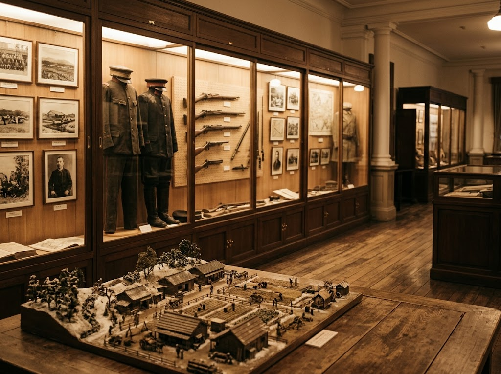

屯田兵の開拓と、北の護りの歩みを今に伝える
入館無料 ／ 旭川駐屯地隣屯田兵による開拓、旧陸軍第七師団の歩み、そして戦後の陸上自衛隊第2師団の活動まで。約2,500点にのぼる貴重な資料を通じて、北海道の礎を築いた人々の足跡を体系的にご覧いただけます。

実際に使われていた軍用具や生活用品、当時の写真や模型を通して、往時の様子をリアルに思い描くことができます。
パネル、ジオラマ、実物資料に加え、コスプレ体験など多彩な展示手法で、歴史に初めて触れる方にも親しみやすい館内です。
屯田兵や旧陸軍第七師団に関する歴史資料を所蔵・展示。軍用具、生活用品、写真、模型が並びます。
北海道の屯田兵制度と軍事史を、時代の流れに沿って分かりやすく伝えています。
陸上自衛隊第2師団の歴史と、現在の活動も紹介。過去と現在を一つの流れとして知ることができます。
実物資料やジオラマ、コスプレ体験など、見て、触れて、感じる展示が揃っています。
北鎮記念館の創設を発案したのは、1962年に当時の第2師団長であった和田盛哉。北方防衛に関する資料の収集と保存を目的として、翌1963年に初代記念館が司令部庁舎内に設置されました。
日本の北方防衛の歴史、屯田兵の開拓と防衛の役割、旧第七師団の歩み、そして戦後の第2師団の活動を後世に伝えるため、約2,500点の資料が展示・保存されています。
1896年に北海道の防衛と開拓を目的として第七師団が新設され、1901年に札幌から旭川へ転営。日露戦争(1904-1905)、太平洋戦争(1941-1945)では、極寒の中で食糧も乏しく、武器も装備も脆弱な状態でロシアの南下を食い止め続けた。
旭川第７師団を北海道民は畏敬の念を多分に込めて「北鎮部隊」と呼んだ。
幾多能満毛利 〜北の護り〜 陸軍大将伯爵 桂太郎。「我々の領土を守るぞ」という強い気概と意気込みが込められ、その意思は現在の陸上自衛隊第二師団に受け継がれている。
入館無料です。更に館内を親切に案内頂けます。最高にお勧めです。
屯田兵を母体として第七師団を札幌月寒に置かれ、その後旭川に移り最大で1万人弱までの人員規模だったとの事。展示品はパネル展示、ジオラマ、銃剣、軍服など貴重品の数々です。大東亜戦争をはじめとして、沢山の戦争に参加され沢山の犠牲者も出た事と思います。今の平和な日本がある事に感謝して、護国神社にも参拝させて頂きます。ありがとうございました。
| 施設名 | 北鎮記念館 |
|---|---|
| 住所 | 北海道旭川市春光町 陸上自衛隊旭川駐屯地隣 |
| 電話番号 | 0166-51-6111 |
| 定休日 | 月曜 |
| 入館料 | 無料 |
| 公式サイト | https://www.mod.go.jp/gsdf/nae/2d/hokutin2/top.html |
| メール | hoku-asahikawa-na@inef.dsdf.mod.go.jp |